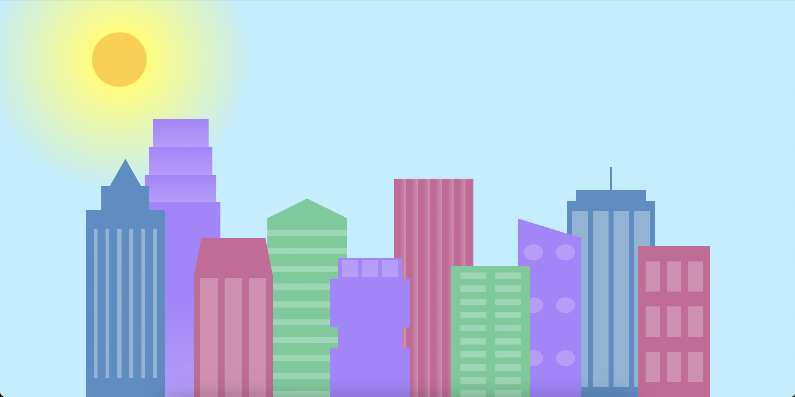
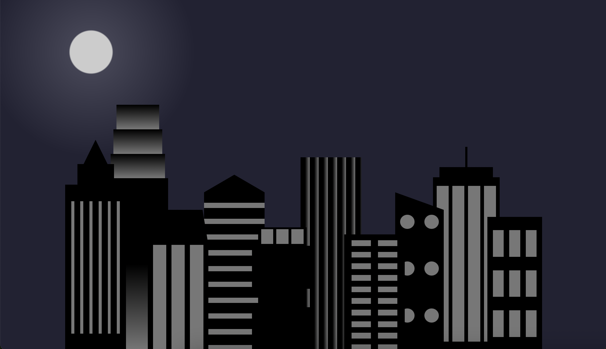
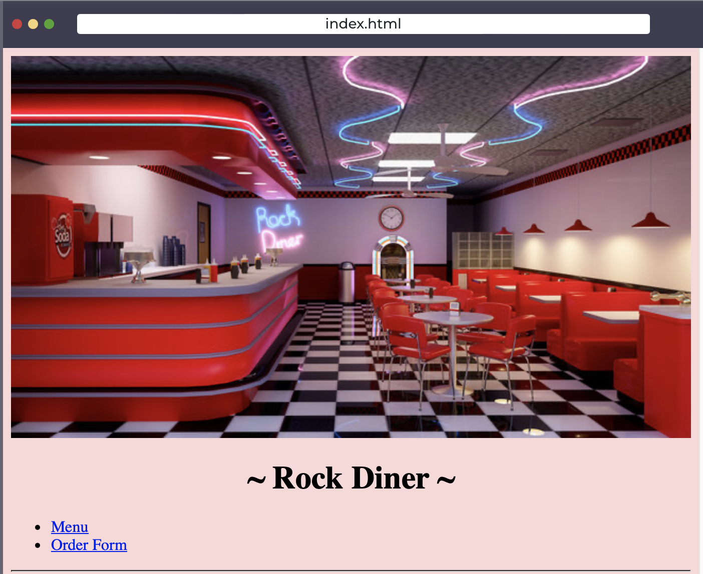
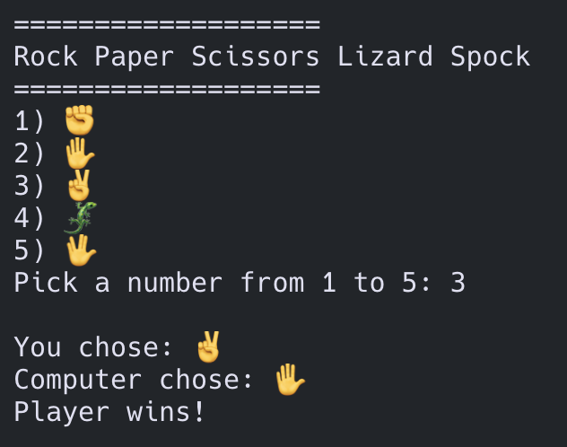
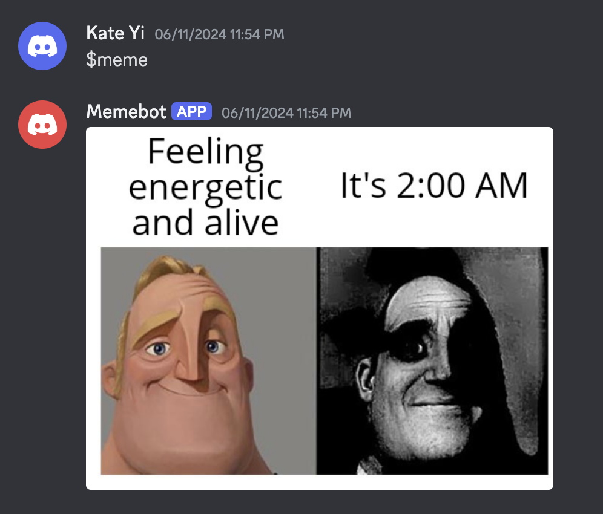
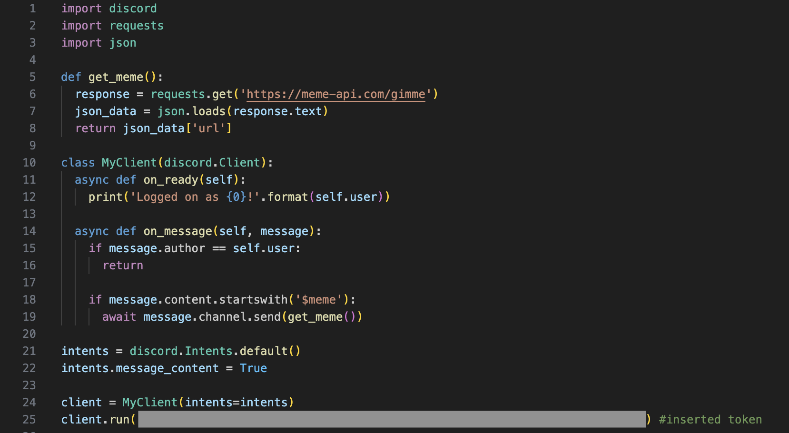

About Me!
Hey there, welcome to my personal site! My name is Kate Yi and I am currently in my last year of high school, about to take my final IB exams this November. My hobbies include music, theatre, STEM, learning to code and working on various projects. Currently, the languages I have learnt are basic Python, HTML and CSS. Feel free to take a look under 'Projects' or contact me under 'Contact' to connect!
Projects!
Buildings in the Day and Night
 Descrption: Image of buildings that change in colour and background from day to night and vice versa when the size of the browser window changes. Made using HTML and CSS.
Restaurant Menu
Description: Website for a fictional rock diner that showcases the menu and order form. Made using HTML and CSS.
Rock Paper Scissors Lizard Spock
Description: Extended version of Rock Paper Scissors playable on the terminal. Made using python and if, elif, else statements.
Discord MemeBot
 Description: Discord bot that sends a random meme when the user types $meme. Made using python on VS Code.